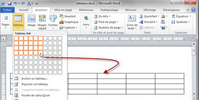
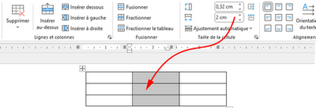
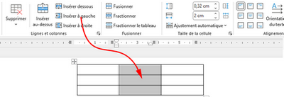
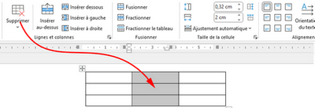
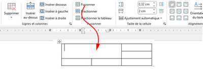
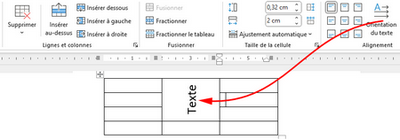
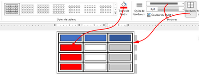

III) Création des tableaux
1. Insérer un tableau
✔ Cliquez à l'emplacement où vous souhaitez insérer un tableau.
✔ Dans le groupe «Tableaux» de l’onglet «Insertion», cliquez sur «Tableau»
✔ Sélectionnez le modèle souhaité.

2. Redimensionner des lignes et des colonnes
✔ Sélectionner de(s) ligne(s) ou de(s) colonne(s)
✔ Dans le groupe «Taille de la cellule» de l’onglet «Disposition», modifiez la valeur «hauteur des lignes» ou «largeur de colonnes»

3. Ajouter/Supprimer des lignes et des colonnes
Ajouter une ligne :
✔ Sélectionnez la ligne figurant l’endroit où vous voulez insérer la nouvelle ligne.
✔ Dans le groupe «lignes et colonnes» de l’onglet «Disposition», cliquez sur: «Insérer au-dessus» ou «Insérer dessous»
Ajouter une Colonne :
✔ Sélectionnez la colonne figurant l’endroit où vous voulez insérer la nouvelle ligne.
✔ Dans le groupe «lignes et colonnes» de l’onglet «Disposition», cliquez sur: «Insérer à gauche» ou «Insérer à droite»

Supprimer une ligne, une colonne ou tout le tableau :
✔ Cliquez dans une cellule dans le tableau.
✔ Dans le groupe «lignes et colonnes» de l’onglet «Disposition», cliquez sur: «Supprimer les lignes» , «Supprimer les colonnes» ou «Supprimer le tableau»

4. Fusionner des cellules
✔ Sélectionner les cellules à fusionner
✔ Dans le groupe «Fusionner» de l’onglet «Disposition»,cliquez sur «Fusionner»

5. Orienter un texte dans une cellule
✔ Cliquez sur le texte à orienter
✔ Dans le groupe «Alignement» de l’onglet «Disposition»,cliquez sur «orientation du texte»

6. Mettre en forme les cellules d’un tableau
✔ Cliquez sur le tableau à formater.
✔ Dans le groupe «Style de tableau» de l’onglet «Création», sélectionnez un style ou cliquez sur
«Bordures»
